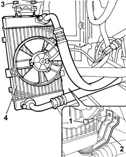
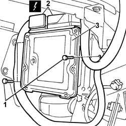

1060G80 Diesel electronic injection system CONTROL UNIT - R.R.
- Path
- Procedures > 10 ENGINE > 1060 DIESEL FUEL INJECTION SYSTEM > 1060G DIESEL INJECTION PRESSURE PUMP ELECTRONIC CONTROL > 1060G80 Diesel electronic injection system CONTROL UNIT - R.R.
- Kind
- repair procedure (removal / refitting; the operation number is the code)
- Applies to
- engines: 2.4 JTD 20V; all production periods
- Interactive page
- https://sloeber94.github.io/elrnDB-lThss/en/#/850591
Applies to: engines: 2.4 JTD 20V; all production periods
 Removing
Removing
 Refitting
Refitting- Position the vehicle on a lift.
- Working via the boot, disconnect the negative battery terminal.
See in Op. 4450B02 Left FRONT WHEEL (one) - R.R.
See in Op. 7055B64 Engine compartment DUST SEAL in front wheel arch (one), left or right - R.R.
1. Undo the retaining bolts.
- Release the bracket from the engine oil radiator support pin.
2. Remove the engine oil cooling radiator mounting bracket.
3. Undo the upper retaining nuts.
4. Move the engine cooling radiator out of the work area, securing in such a way that the pipes are not damaged.

Applies to: engines: 2.4 JTD 20V; all production periods
1. Undo the retaining bolts.
2. Disconnect the engine management control unit electrical connections.
3. Remove the engine management control unit.
 | Description | Connector |
|---|---|---|
2 | Engine management control unit | M010A |
| Description | Connector |
|---|---|---|
2 | Engine management control unit | M010B |

Applies to: engines: 2.4 JTD 20V; all production periods
Refitting
Removing- Fit the engine management control unit in the housing on the bodyshell.
- Connect the electrical connections for the engine management control unit.
| Description | Connector |
|---|---|---|
. | Engine management control unit | M010A |
| Description | Connector |
|---|---|---|
. | Engine management control unit | M010B |
- Tighten the fixing bolts to torque.
- Position the engine oil cooling radiator.
- Tighten the upper mounting bracket fixing nuts.
- Fit the lower engine cooling radiator mounting bracket and tighten the fixing bolts.
See in Op. 7055B64 Engine compartment DUST SEAL in front wheel arch (one), left or right - R.R.
See in Op. 4450B02 Left FRONT WHEEL (one) - R.R.
- Connect the negative battery terminal.
- Remove the vehicle from the lift.
Topics linked from this page (2)
- 4450B02 Left FRONT WHEEL (one) - R.R.
- 7055B64 Engine compartment DUST SEAL in front wheel arch (one), left or right - R.R.